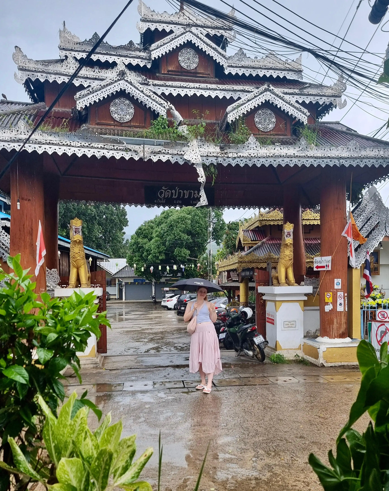
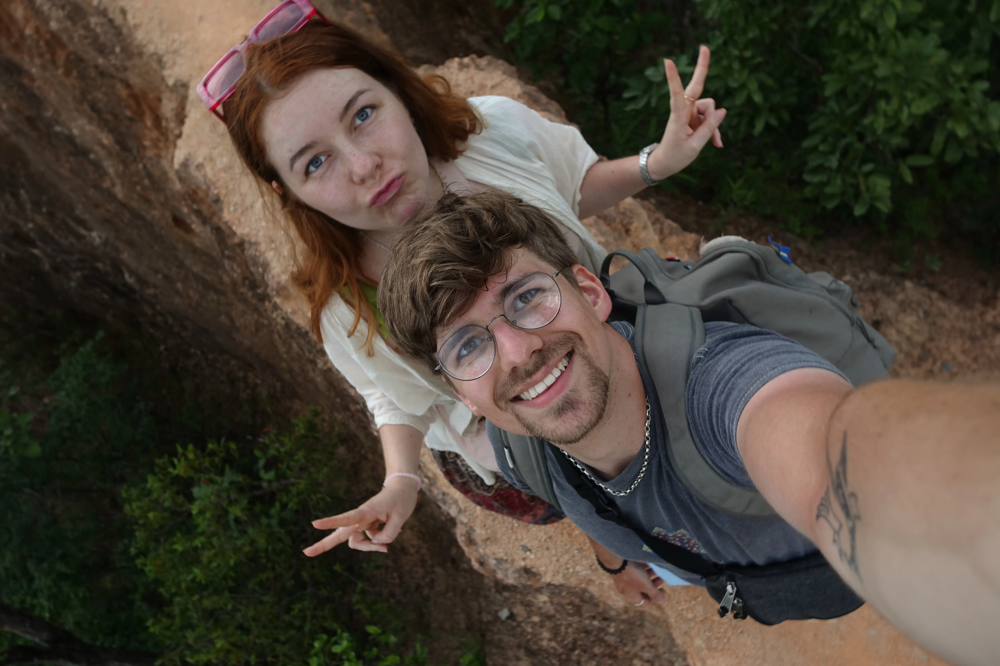
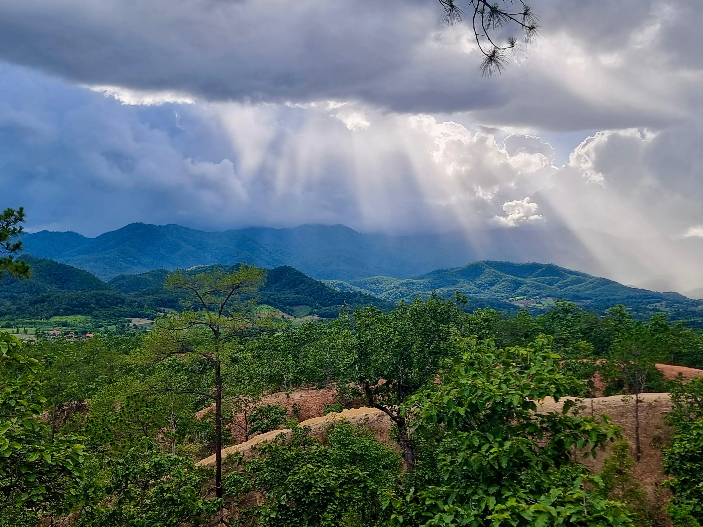
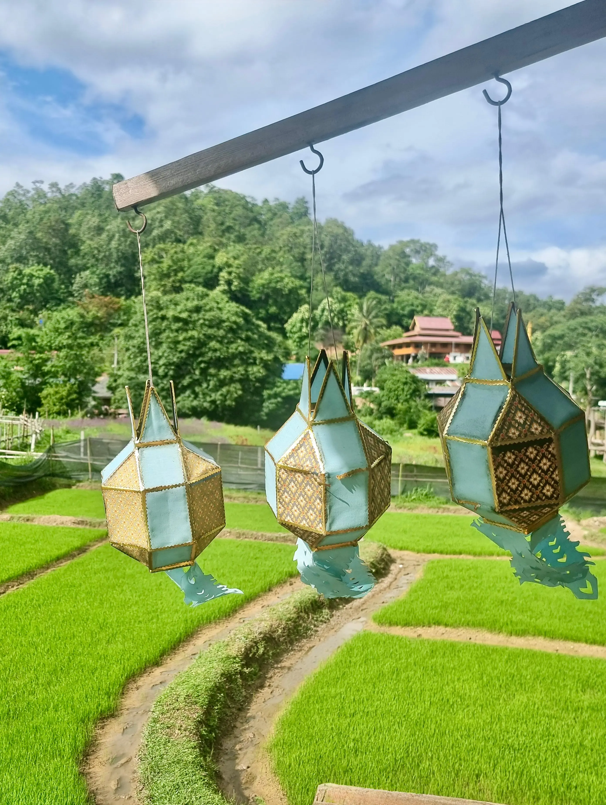

Heute fahren wir noch weiter in den Norden, an die Grenze zu Myanmar. Der einst kleine beschauliche Ort heißt Pai und man erreicht ihn nur über Reisebusse oder den Roller, da er relativ abgeschieden in den Bergen liegt. Die Fahrt von Chiang Mai nach Pai dauert vier Stunden und umfasst 762 Kurven. Das sind 190 Kurven die Stunde, also jede Minute ca. 3 Kurven. Und genau so fühlt sich das Spektakel auch an. Da helfen die Reisetabletten, die ich mir vorher gekauft hatte, auch nicht gegen an. Mir geht es ziemlich schlecht als wir endlich die Fahrt überstanden haben und in Pai ankommen.
Schon als wir durch die Straßen zum Busbahnhof fahren, fällt mir das ein, was unsere Bekanntschaft Ziv beim Mittagessen in Chiang Mai geantwortet hatte, als ich gefragt hatte, ob es im Norden weniger touristisch wäre: "Nein, Pai besteht nur aus Touris." Und er hat recht: die Hauptstraße ist gesäumt von elegant designten Cafés und rustikalen Hippie Bars, die meisten Hotels sind klein und auf Backpacker ausgerichtet. Erst schreckt mich die Fülle an englischer Werbung und so offensichtlich nicht thailändischen Läden ab, aber dann muss ich mir eingestehen, dass ich auch leider genau die Zielgruppe bin. So viele Geschäfte verkaufen handgemachte Ketten, gebatikte Röcke und Ohrringe mit kleinen Edelsteinen daran. Es ist touristisch, wirkt überlaufen, aber trotzdem gemütlich.
Mit unseren mittlerweile schwerer gewordenen Rucksäcken machen wir uns zu Fuß auf zu unserem Hotel und müssen erst mal feststellen, dass die Regenzeit erste Opfer gefordert hat: Die Brücke, auf deren anderer Seite direkt unser Hotel liegt, existiert nicht mehr. Die Bambus-Reste kann man etwa 20 Meter weiter weg angeschwemmt am Flussufer erkennen. Also drehen wir bereits schweißgebadet um und stapfen zu einer weiteren Bambus-Brücke, etwas weiter weg.
Das Hotel ist einfach, aber ganz in Ordnung, wenn auch überteuert für das was es ist: The Nest House besteht aus einigen freistehenden Hütten mit Blick auf die Berge, die Pai umgeben. Die Zimmer sind leer bis auf einen Kühlschrank, einen Beistelltisch und ein Bett, über dem ein Fliegennetz hängt. Das ist ein Anzeichen dafür, dass wir nicht mehr in der Großstadt, sondern in der Natur sind: Es gibt wirklich viele Viecher. Mücken lieben das feuchte Klima und vor allem die Nähe zum Fluss und übertragen hier im Norden auch gerne mal Malaria. Deswegen sprühen wir uns immer mit einer klebrigen Schicht Mückenspray ein, bevor wir das Zimmer verlassen, um Pai zu erkunden.
Es ist immer noch heiß, aber erträglicher. Wir suchen uns ein kleines Café und sind zuerst einmal schockiert über die Preise: Sie sind ungefähr doppelt so teuer wie in Chiang Mai und sind in Restaurants, die westliches Essen anbieten, fast die europäischen Preise. Das ist besonders erstaunlich wenn man bedenkt, dass es in Thailand keinen Mindestlohn gibt und die Zutaten fürs Essen ein paar Cent kosten. Wir finden glücklicherweise ein Restaurant, das thailändisches Essen zum normalen Preis von 60 Baht (1,50 €) anbietet und uns sehr gutes Curry serviert.
Wir schlendern durch den Ort, der aus einer langen Straße besteht, die sich am Fluss entlang schlängelt, und kleinen, noch ursprünglicheren Straßen, die davon abgehen. An ihnen liegen nicht ausschließlich Cafés und Restaurants, die auf Touristen abzielen, sondern auch mal Läden für die Leute, die wirklich in Pai wohnen. Man merkt allerdings, dass Pai eigentlich ein Dorf ist, das auf einmal ein Vielfaches der eigenen Einwohner versorgen und unterbringen muss. Dabei sind wir nur in der Nebensaison hier. Dennoch macht es Spaß, in den Geschäften zu bummeln.

Abends gehen wir noch zu einer Hippie-Bar, die etwas weiter außerhalb liegt und von deren hochgelegenen Terrasse man den Sonnenuntergang über den Bergen bestaunen kann. Wir bestellen Getränke und lassen den Abend ausklingen. Ich beobachte den Besitzer, der offenbar nicht so ganz auf dieser Welt ist, wie er beim Abräumen eines anderen Tisches eine Bierflasche wegräumt, in der noch ein letzter Schluck ist. Er hält sie über den Mülleimer mit Deckel, um sie zu entleeren, allerdings ohne vorher den Deckel anzuheben. Verwirrt schaut er auf das klebrige Bier, das jetzt vom Mülleimerdeckel auf den Boden tropft, runzelt die Stirn, öffnet den Deckel dann und entsorgt die Flasche. Das ist Pai: liebe Menschen und viel Gras.
Es ist schon dunkel, als wir nach Hause laufen. Wir gehen über den Nachtmarkt, sind aber erschöpft vom Tag und gehen direkt in unser Hotel. Wir schaffen uns eine kleine sichere Insel unter dem Fliegennetz und schlafen bei Urwaldgeräuschen und kämpfenden Katzen gut durch.
Am nächsten Tag heißt es wieder: Roller mieten - dieses Mal für zwei Tage - und die Gegend erforschen. Eigentlich wollen wir zu heißen Quellen in der Nähe von Pai, als wir allerdings sehen, dass der Eintritt 400 Baht pro Person kostet, was dem Zwölffachen des Preises für Thais entspricht, ist es uns das dann doch nicht wert. Der Eintritt bei den Mae-Sa-Wasserfällen, die wesentlich größer und beeindruckender sind, hat nur einen Bruchteil gekostet.

Wir fahren weiter umher, Berge rauf und runter. Wir besichtigen einen Tempel und einen weißen Buddha, der über das Tal von Pai auf einem Berg wacht. Man muss in der sengenden Sonne einige Stufen zu ihm hoch, aber oben weht eine angenehm frische Brise. Wir ruhen uns auf den Stufen aus, bevor wir dehydriert wieder auf den Roller steigen. Insgesamt verbringen wir den Tag eigentlich größtenteils auf zwei Rädern, Julius fährt und ich weise den Weg und mache manchmal Fotos.
Gegen Abend fahren wir zum Pai Canyon, weichgewaschene rote Erde, die sich aus den Wäldern erhebt. An einigen Stellen sind die Wege nur so breit wie mein ausgestreckter Arm, ein falscher Schritt und man fällt 20 bis 30 Meter herunter. Meine Tracking-Sandalen halten wacker durch und tragen mich trotz ein paar Mal Rutschen sicher zu einigen Aussichtspunkten.
Leider warten wir nicht auf den Sonnenuntergang, den man wohl gut vom Canyon aus sehen kann, sondern sehen die düsteren Wolken am Horizont und beschließen, den Rückweg nach Pai anzutreten. Trotzdem müssen wir auf halber Strecke Unterschlupf in einem bereits geschlossenen Café suchen. Von dort aus kann man die Regenwand klar erkennen, wie sie nach und nach immer weiter in unsere Richtung zieht.

Das Ganze dauert etwa eine halbe Stunde, die wir nutzen um unseren Aufenthalt in Pai zu verlängern und eine andere Unterkunft für die letzte Nacht in Pai zu suchen.
Abends schlendern wir endlich über den Pai Night Market, der auf der langen Straße jeden Abend stattfindet. Wir kaufen ein paar Souvenirs und ein handgemachtes Armband für mich. Und natürlich diverse leckere Sachen: ein vietnamesisches Sandwich mit paniertem Hühnchen und handgemachten Mangokuchen. Für Getränke ist 7 Eleven wie immer unsere Rettung.
An unserem letzten Tag besuchen wir auf Anraten von Karim und Bianca, die wir gestern auf dem Markt getroffen haben, ein Reisfeld, das etwa eine halbe Stunde von Pai entfernt ist. Die Gemeinde hat Bambuswege über den Pflanzen gebaut, sodass man auf dem leicht federnden Steg über die Landschaft schreiten kann.
Wir füttern gegen eine Spende dicke Welse in einem Fischteich und laufen den Pfad bis zu einem Tempel, den ich wegen meiner unbedeckten Schultern leider nicht betreten kann. Hier sind nur wenige Touristen und es ist angenehm ruhig, die Sonne scheint, ist aber nicht erbarmungslos warm und man hört die Rinder der Bauern.
Immer wieder gibt es kleine Pavillons auf dem Weg, in die man sich zum Ausruhen setzen kann und die vor Regen schützen. Wir machen ein paar Fotos und Julius probiert den Selbstauslöser der Kamera aus.
Er küsst mich für das Bild Warum schlägt sein Herz so doll? und sagt mir, wie sehr er den Urlaub mag und wie doll er mich lieb hat. Und dann geht er auf die Knie, mit einem Ring in der Hand.
Ich sage „Ja“, noch bevor er die Frage richtig gestellt hat: „Willst du mich heiraten?“ Natürlich. Natürlich will ich! Wie glücklich ich in diesem Urlaub mit ihm bin hat mir noch einmal mehr gezeigt, wie gut wir zusammen passen und wie sehr ich auch alle kommenden Urlaube und Jahre mit ihm verbringen will. Von all den schönen Momenten, die ich in dem Urlaub schon mit ihm hatte und in den letzten dreieinhalb Jahren erleben durfte, brauche ich gar nicht erst anzufangen.
Noch vollkommen benebelt gehen wir als Verlobte zurück zu dem Haupthaus, in dem bunte Lanna-Laternen im Wind schaukeln. Sie sind hellblau und mit goldenen Zeichen verziert. Lange schaue ich ihnen zu und lasse den Antrag auf mich wirken, bis wir zurückfahren.

Abends stoßen wir an und rufen meine Eltern an, um ihnen die frohe Botschaft zu verkünden. Ich probiere, wie die Worte „Mein Verlobter“ schmecken und bin glücklich. Wir trinken noch einen Cider mit Karim und Bianca und hoffen, dass wir uns im Süden noch einmal treffen können.
Morgen geht es erst mal für die nächsten drei Tage zurück nach Chiang Mai. Dann werden bereits zwei Wochen vergangen sein. Bleiben noch zwei für den Süden.